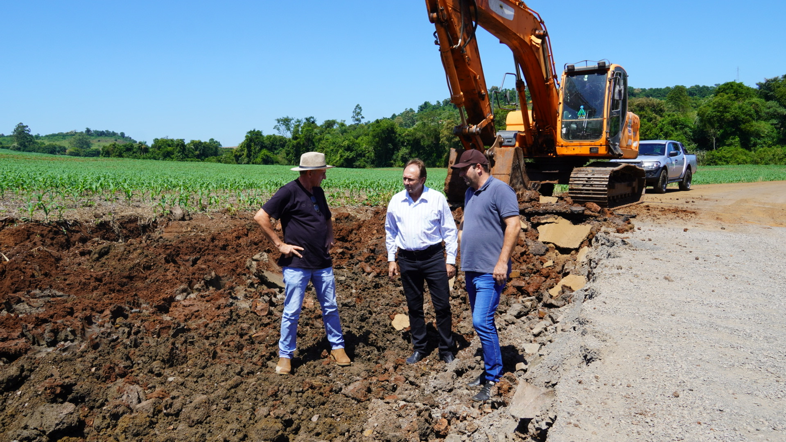

Notícias

Após mais de uma decada, estrada entre a cidade e Santo Antônio do Siemes começa a receber melhorias.
O prefeito Neivor Kessler, acompanhado dos secretários Marcelo Barth e Roque Pompermaier, visitaram ontem as obras de recuperação asfáltica no trecho que liga a cidade a Santo Antônio do Siemes. A iniciativa busca preservar a estrada, pavimentada há mais de uma década e que, até então, não havia passado por nenhuma manutenção significativa. “Nosso objetivo é evitar um desgaste ainda maior da via, garantindo mais segurança e conforto para os motoristas que trafegam por aqui diariamente”, destacou o prefeito.

Proteção de fonte é realizada em propriedade do Cristo Rei.
A Secretaria de Agricultura e Meio Ambiente de Capanema, em parceria com a Casa Familiar Rural, realizou um trabalho de proteção de fonte na propriedade de Giovani e Silvia Bayerle, na comunidade Cristo Rei. A ação contou com a participação dos alunos do Curso Técnico Agrícola da Casa Familiar Rural de Capanema/Planalto, juntamente com a Escola Base Padre Cirilo. O trabalho foi acompanhado pelo secretário municipal de Agricultura, Marcelo Barth, e conduzido pelo técnico em Meio Ambiente Renato Kochhann, com supervisão das professoras da área técnica, a engenheira agrônoma Mayra Haskel e a médica veterinária Nikoli Marcom. A ação enfatiza a importância da preservação dos recursos hídricos e promove o aprendizado prático dos estudantes, contribuindo para a formação de profissionais capacitados e comprometidos com o meio ambiente.